library(sf)
library(rnaturalearth)
library(ggplot2)
library(dplyr)
library(classInt)
library(gridExtra)
world <- ne_countries(scale = "medium", returnclass = "sf")
world2<-subset(world, select = c(admin, adm0_a3, sovereignt, continent))
world2<-subset(world2, admin!="Antarctica")Lab 6: Spatial Data
Mapping Data
1 Intro
In this lab, we will learn how to make maps. We will learn how to represent polygons, points, lines, and raster
1.1 Obtaining the Data
To obtain this map we first need to obtain the two datasets
Dataset 1 - Average Life Expectancy
Dataset 2 - World polygons
We can inspect the shapefile in the following way:
head(world2, n=3)Simple feature collection with 3 features and 4 fields
Geometry type: MULTIPOLYGON
Dimension: XY
Bounding box: xmin: -70.06611 ymin: -18.01973 xmax: 74.89131 ymax: 38.4564
Geodetic CRS: +proj=longlat +datum=WGS84 +no_defs +ellps=WGS84 +towgs84=0,0,0
admin adm0_a3 sovereignt continent geometry
0 Aruba ABW Netherlands North America MULTIPOLYGON (((-69.89912 1...
1 Afghanistan AFG Afghanistan Asia MULTIPOLYGON (((74.89131 37...
2 Angola AGO Angola Africa MULTIPOLYGON (((14.19082 -5...Let us now familiarize ourselves with the two datasets
2 Mapping Spatial Data: The Code
#Setting path
setwd("/Users/bgpopescu/Library/CloudStorage/Dropbox/john_cabot/teaching/big_data/lab6/")
#Step1: Loading the data
life_expectancy <- read.csv(file = './data/life-expectancy.csv')
head(life_expectancy, n=3) Entity Code Year Life.expectancy.at.birth..historical.
1 Afghanistan AFG 1950 27.7
2 Afghanistan AFG 1951 28.0
3 Afghanistan AFG 1952 28.4head(world2, n=3)Simple feature collection with 3 features and 4 fields
Geometry type: MULTIPOLYGON
Dimension: XY
Bounding box: xmin: -70.06611 ymin: -18.01973 xmax: 74.89131 ymax: 38.4564
Geodetic CRS: +proj=longlat +datum=WGS84 +no_defs +ellps=WGS84 +towgs84=0,0,0
admin adm0_a3 sovereignt continent geometry
0 Aruba ABW Netherlands North America MULTIPOLYGON (((-69.89912 1...
1 Afghanistan AFG Afghanistan Asia MULTIPOLYGON (((74.89131 37...
2 Angola AGO Angola Africa MULTIPOLYGON (((14.19082 -5...What is interesting about this dataframe is that it has another column that starts with “MULTIPOLYGON”
Let us have a closer look at the dataframe
head(world2, n=3)Simple feature collection with 3 features and 4 fields
Geometry type: MULTIPOLYGON
Dimension: XY
Bounding box: xmin: -70.06611 ymin: -18.01973 xmax: 74.89131 ymax: 38.4564
Geodetic CRS: +proj=longlat +datum=WGS84 +no_defs +ellps=WGS84 +towgs84=0,0,0
admin adm0_a3 sovereignt continent geometry
0 Aruba ABW Netherlands North America MULTIPOLYGON (((-69.89912 1...
1 Afghanistan AFG Afghanistan Asia MULTIPOLYGON (((74.89131 37...
2 Angola AGO Angola Africa MULTIPOLYGON (((14.19082 -5...We can now subset our data to everything that is higher than 1900
life_expectancy<-subset(life_expectancy, Year>1900)We can then calculate the average life expectancy by country.
life_expectancy2<-life_expectancy%>%
group_by(Code, Entity)%>%
summarize(life_expectancy=mean(Life.expectancy.at.birth..historical.))`summarise()` has grouped output by 'Code'. You can override using the
`.groups` argument.#Removing continents
life_expectancy3<-subset(life_expectancy2, life_expectancy2$Code!="")world <- read_sf(dsn = "./data/world_shp/world.shp")
merged<-left_join(world, life_expectancy3, by = c("adm0_a3" = "Code"))
#glimpse(merged)ggplot() +
geom_sf() +
geom_sf(data = merged, aes(fill = life_expectancy))+
scale_fill_gradient(name = "Life Expectancy", low = "lightblue", high = "darkblue")
ggplot() +
geom_sf() +
geom_sf(data = merged, aes(fill = life_expectancy))+
scale_fill_gradient(name = "Life Expectancy", low = "lightblue", high = "darkblue")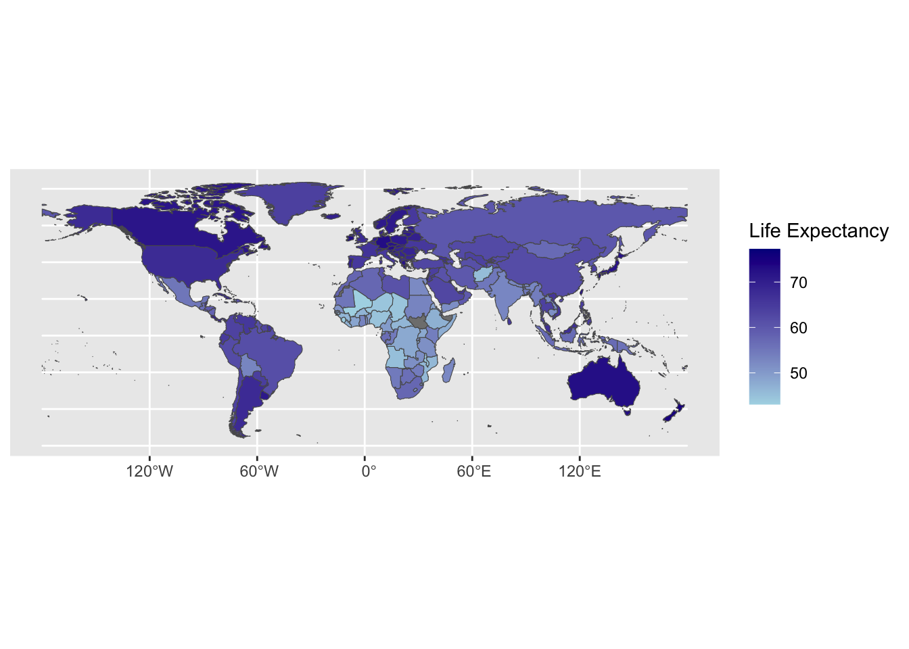
3 Statistical Maps
The most common maps are choropleth maps, which show variability of a variable over one region
Life expectancy in the example below is a continuous variable
In the choropleth map above, we see that the continuous variable, which is life expectancy, got reduced to discrete entities.
Making values discrete values from continuous means that we are assigning those values to bins.
For example, all countries that have and average life a life expectancy of 70 to 80, get assigned to one value
The same map is equivalent to a histogram
clint <- classIntervals(merged$life_expectancy, style = "equal", n = 10)$brks
p1<-ggplot(merged, aes(fill=life_expectancy)) + geom_sf() + theme_void() +
scale_fill_stepsn(colors = c("lightblue", "darkblue"),
#the following creates a 10-step interval
breaks = clint[2:(length(clint)-1) ],
values = scales::rescale(clint[2:(length(clint)-1) ], c(0,1)),
guide = guide_coloursteps(even.steps = FALSE,
show.limits = TRUE,
title = NULL,
barheight = unit(2.02, "in"),
barwidth = unit(0.25, "in"),
label.position = "left"))
p1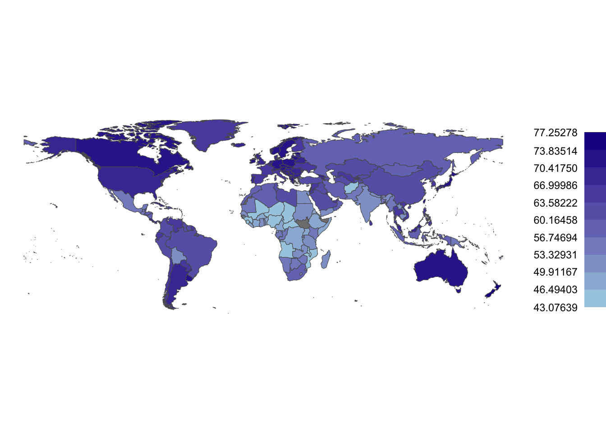
p2<- ggplot(merged, aes(life_expectancy)) + geom_histogram(breaks = clint, col="white") +
scale_x_continuous(breaks = c(min(clint), median(clint), max(clint)),position = "top") +
coord_flip() + scale_y_continuous(labels = NULL, breaks = NULL) +
ylab(NULL) +xlab(NULL) +
theme(plot.margin = margin(0.1,0,0,0.1, "in"),
axis.text = element_text(colour = "grey"),
panel.background = element_blank())
p2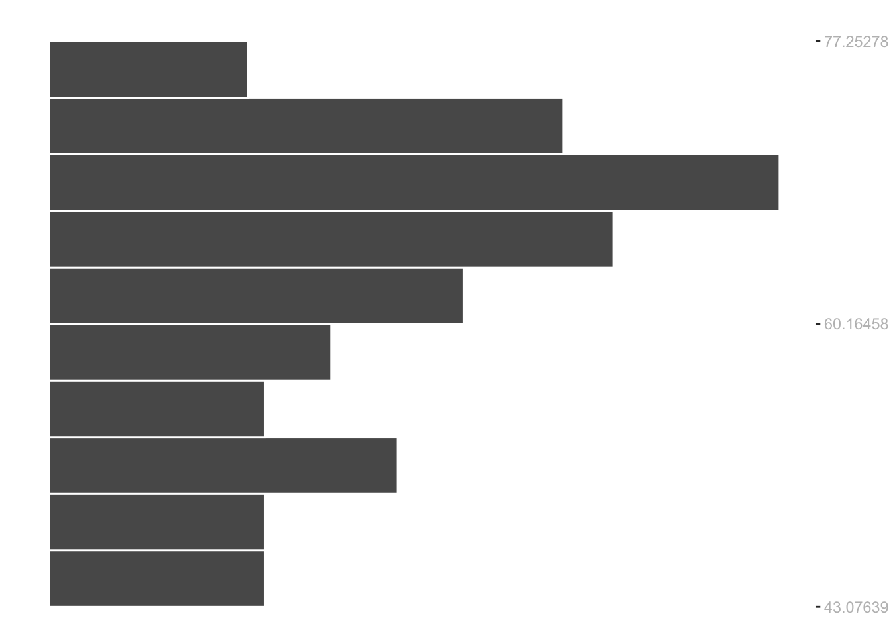
This is what we obtain if we put them side by side
grid.arrange(p1,p2, layout_matrix=rbind(c(1,1,1,2)))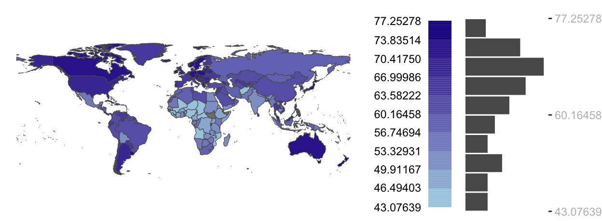
A choropleth map classification equivalent is the equal interval classification scheme
grid.arrange(p1,p2, layout_matrix=rbind(c(1,1,1,2)))
The histogram in the above figure is “flipped” so as to match the bins with the color swatches
The length of each grey bin reflects the number of polygons assigned their respective color swatches
3.1 Quantile Maps
An equal interval map benefits from its intuitiveness
It may not be well suited for a type of data, that is not uniformly distributed
Quantiles define ranges of values that have equal number of observations.
The following plot groups the data into six quantiles with each quantile representing the same number of observations
clint <- classIntervals(merged$life_expectancy, style = "quantile", n = 6)$brks
p1<-ggplot(merged, aes(fill=life_expectancy)) + geom_sf() + theme_void() +
scale_fill_stepsn(colors = c("lightblue", "darkblue"),
#the following creates a 10-step interval
breaks = clint[2:(length(clint)-1) ],
values = scales::rescale(clint[2:(length(clint)-1) ], c(0,1)),
guide = guide_coloursteps(even.steps = FALSE,
show.limits = TRUE,
title = NULL,
barheight = unit(2.02, "in"),
barwidth = unit(0.25, "in"),
label.position = "left"))
p2<- ggplot(merged, aes(life_expectancy)) + geom_histogram(breaks = clint, col="white") +
scale_x_continuous(breaks = c(min(clint), median(clint), max(clint)),position = "top") +
coord_flip() + scale_y_continuous(labels = NULL, breaks = NULL) +
ylab(NULL) +xlab(NULL) +
theme(plot.margin = margin(0.1,0,0,0.1, "in"),
axis.text = element_text(colour = "grey"),
panel.background = element_blank())
grid.arrange(p1,p2, layout_matrix=rbind(c(1,1,1,2)))
clint <- classIntervals(merged$life_expectancy, style = "quantile", n = 6)$brks
p1<-ggplot(merged, aes(fill=life_expectancy)) + geom_sf() + theme_void() +
scale_fill_stepsn(colors = c("lightblue", "darkblue"),
#the following creates a 10-step interval
breaks = clint[2:(length(clint)-1) ],
values = scales::rescale(clint[2:(length(clint)-1) ], c(0,1)),
guide = guide_coloursteps(even.steps = FALSE,
show.limits = TRUE,
title = NULL,
barheight = unit(2.02, "in"),
barwidth = unit(0.25, "in"),
label.position = "left"))
p2<- ggplot(merged, aes(life_expectancy)) + geom_histogram(breaks = clint, col="white") +
scale_x_continuous(breaks = c(min(clint), median(clint), max(clint)),position = "top") +
coord_flip() + scale_y_continuous(labels = NULL, breaks = NULL) +
ylab(NULL) +xlab(NULL) +
theme(plot.margin = margin(0.1,0,0,0.1, "in"),
axis.text = element_text(colour = "grey"),
panel.background = element_blank())
grid.arrange(p1,p2, layout_matrix=rbind(c(1,1,1,2)))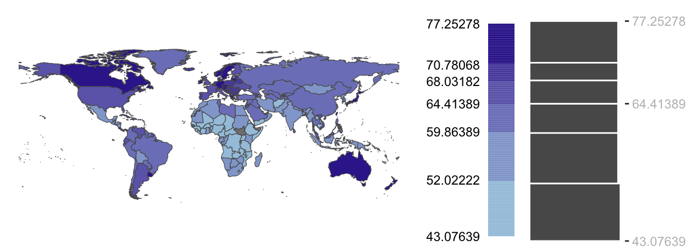
The color swatch lengths in the color bar reflects the different ranges of values covered by each color swatch.
The lightest color swatch covers the largest range of values
Yet it is applied to the same number of polygons as most other color swatches in this classification scheme
3.2 Boxplot Maps
We can also plot our continuous variables in a way that allows us to see the spread of the data
- mean
- median
- standard deviation
The goal is to understand the nature of the distribution, its shape, and range
For example, we can opt for a map that displays the interquartile range
This would give us information about the median, the upper and lower quartiles, and outliers
clint <- classIntervals(merged$life_expectancy, style = "box")$brks
clint[1] -Inf 34.57637 55.51430 64.41389 69.47292 90.41084 Infbr<-clint[2:(length(clint)-1) ]sc_re<-scales::rescale(br, c(0,1))p1<-ggplot(merged, aes(fill=life_expectancy)) + geom_sf() + theme_void() +
scale_fill_stepsn(colors = c("lightblue", "darkblue"),
#the following creates a 10-step interval
breaks = br,
values = sc_re,
guide = guide_coloursteps(even.steps = FALSE,
show.limits = TRUE,
title = NULL,
barheight = unit(2.02, "in"),
barwidth = unit(0.25, "in"),
label.position = "left"))p2<- ggplot(merged, aes(life_expectancy)) + geom_boxplot() +
scale_x_continuous(breaks = br,
labels = sc_re,
position = "top") +
coord_flip() + scale_y_continuous(labels = NULL, breaks = NULL) +
ylab(NULL) +xlab(NULL) +
theme(plot.margin = margin(0.1,0,0,0.1, "in"),
axis.text = element_text(colour = "grey"),
panel.background = element_blank())grid.arrange(p1,p2, layout_matrix=rbind(c(1,1,1,2)))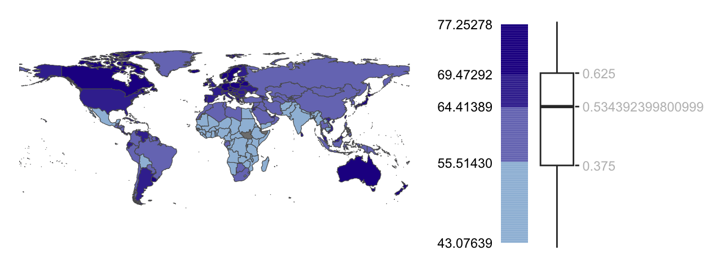
3.3 Interquartile Maps
We can reduce the boxplot map so that we only have three classes
The map’s purpose is to highlight the polygons covering the mid 50% range of values.
clint <- classIntervals(merged$life_expectancy, style = "box")$brks
clint <- clint[c(1,3,5,7)]
p1<-ggplot(merged, aes(fill=life_expectancy)) + geom_sf() + theme_void() +
scale_fill_stepsn(colors = c("lightblue", "darkblue"),
#the following creates a 10-step interval
breaks = clint[2:(length(clint)-1) ],
values = scales::rescale(clint[2:(length(clint)-1) ], c(0,1)),
guide = guide_coloursteps(even.steps = FALSE,
show.limits = TRUE,
title = NULL,
barheight = unit(2.02, "in"),
barwidth = unit(0.25, "in"),
label.position = "left"))
p2<- ggplot(merged, aes(life_expectancy)) + geom_boxplot() +
scale_x_continuous(breaks = clint[1:length(clint)],
labels = clint[1:length(clint)],
position = "top") +
coord_flip() + scale_y_continuous(labels = NULL, breaks = NULL) +
ylab(NULL) +xlab(NULL) +
theme(plot.margin = margin(0.1,0,0,0.1, "in"),
axis.text = element_text(colour = "grey"),
panel.background = element_blank())
grid.arrange(p1,p2, layout_matrix=rbind(c(1,1,1,2)))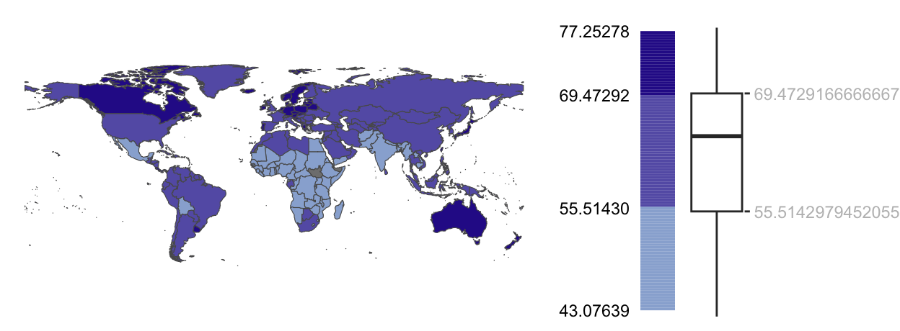
3.4 Standard Deviation Map
- If the distribution of the data can be approximated following a normal distribution, the classification scheme can be broken into different standard deviation units
life_exp_sd <- sd(merged$life_expectancy, na.rm=T)
life_exp_mean <- mean(merged$life_expectancy, na.rm=T)
clint <- c(min(merged$life_expectancy, na.rm=T),
life_exp_mean - life_exp_sd,
life_exp_mean - 0.5 *life_exp_sd,
life_exp_mean,
life_exp_mean + 0.5 * life_exp_sd,
life_exp_mean + life_exp_sd,
max(merged$life_expectancy, na.rm=T))
clint[1] 43.07639 53.69104 58.04834 62.40563 66.76292 71.12021 77.25278p1<-ggplot(merged, aes(fill=life_expectancy)) + geom_sf() + theme_void() +
scale_fill_stepsn(colors = c("lightblue", "darkblue"),
#the following creates a 10-step interval
breaks = clint[2:(length(clint)-1) ],
values = scales::rescale(clint[2:(length(clint)-1) ], c(0,1)),
guide = guide_coloursteps(even.steps = FALSE,
show.limits = TRUE,
title = NULL,
barheight = unit(2.02, "in"),
barwidth = unit(0.25, "in"),
label.position = "left"))
p2<- ggplot(merged, aes(life_expectancy)) +
geom_histogram(aes(y = after_stat(density)), bins = 10,
fill = "grey70",
col = "white")+
coord_flip() +
geom_density(colour = "blue")+
scale_x_continuous(breaks = clint,
labels = c("Min", "-1SD" , "-0.5*SD", "Mean", "0.5*SD", "1SD", "Max"),
position = "top", limits = range(clint)) +
scale_y_continuous(labels = NULL, breaks = NULL) +
ylab(NULL) +xlab(NULL) +
theme(plot.margin = margin(0.1,0,0,0.1, "in"),
axis.text = element_text(colour = "grey"),
panel.background = element_blank())
grid.arrange(p1,p2, layout_matrix=rbind(c(1,1,1,2)))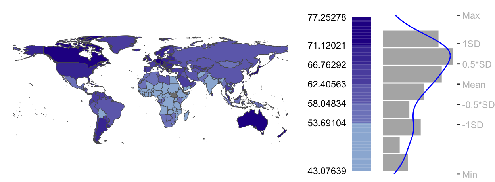
3.5 Outlier Maps
So far we looked at the entire distribution of values
However, we may want to place emphasis on extreme values
We can produce outlier maps with
- Boxplot
- Standard deviation
- Quantiles
life_exp_sd <- sd(merged$life_expectancy, na.rm=T)
life_exp_mean <- mean(merged$life_expectancy, na.rm=T)
clint <- c(min(merged$life_expectancy, na.rm=T),
life_exp_mean - life_exp_sd,
life_exp_mean - 0.5 *life_exp_sd,
life_exp_mean,
life_exp_mean + 0.5 * life_exp_sd,
life_exp_mean + life_exp_sd,
max(merged$life_expectancy, na.rm=T))merged2<-subset(merged, !is.na(life_expectancy))
merged3<-subset(merged2, life_expectancy>79)
p1 <- ggplot(merged2, aes(fill=life_expectancy)) + geom_sf(linewidth=0.1, color="grey30") + theme_void() +
scale_fill_stepsn(colors = c("#1A9850",
"#f7f7f7", "#f7f7f7",
"#D73027") ,
#breaks = clint[1:(length(clint)) ],
breaks = clint[c(1, 2, 6,7)],
values = scales::rescale(clint[c(1, 2, 6,7)], c(0,1)),
limits = range(clint),
guide = guide_coloursteps(even.steps = FALSE,
show.limits = FALSE,
title = NULL,
barheight = unit(2.0, "in"),
barwidth = unit(0.15, "in"),
label.position = "left")) p2<- ggplot(merged, aes(life_expectancy)) +
geom_histogram(aes(y = after_stat(density)), bins = 10,
fill = "grey70",
col = "white")+
coord_flip() +
geom_density(colour = "blue")+
scale_x_continuous(breaks = clint,
labels = c("Min", "-1SD" , "-0.5*SD", "Mean", "0.5*SD", "1SD", "Max"),
position = "top", limits = range(clint)) +
scale_y_continuous(labels = NULL, breaks = NULL) +
ylab(NULL) +xlab(NULL) +
theme(plot.margin = margin(0.1,0,0,0.1, "in"),
axis.text = element_text(colour = "grey"),
panel.background = element_blank())
grid.arrange(p1,p2, layout_matrix=rbind(c(1,1,1,2)))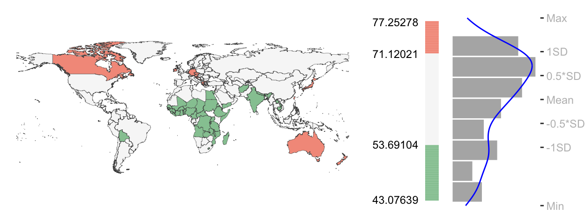
ggplot() +
geom_sf() +
geom_sf(data = merged)+
#geom_sf(data = merged, aes(fill = life_expectancy))+
labs(x = "Longitude", y="Latitude")+
theme_bw()+
coord_sf(expand = FALSE) +
scale_y_continuous(
limits = c(-90, 90, by = 30),
breaks = seq(from = -90, to = 90, by = 30))+
scale_x_continuous(
limits = c(-180, 180, by = 30),
breaks = seq(from = -180, to = 180, by = 30))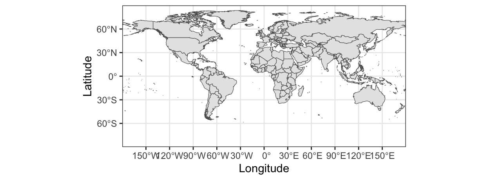
4 Coordinate Systems
4.1 Geographic Coordinate Systems
Geographic coordinate reference systems represent points on a globe, using units of degrees longitude and latitude.
A geographic coordinate system provides a frame of reference for your data to locate features on the surface of the earth, to align your data relative to other data
They correspond to angles measured from the center of the Earth as calculated using the given ellipsoid.
A projection is necessary to create any two-dimensional map, but it results in the distortion of aspects of the Earth’s surface such as area, direction, distance, and shape.
A projected reference systems is useful for geographic analysis, because it uses linear units of measurement such as meters instead of degrees.
4.2 Projected Coordinate Systems
A projected coordinate system is a reference system for identifying locations and measuring features on a flat (map) surface
Going from a GCS to a PCS requires mathematical transformations.
To perform spatial analyses correctly, all the data has to have the same coordinate system
4.3 Types of Projected Coordinate Systems
dunia = spData::world %>%
st_as_sf()
ggplot() +
geom_sf(data = dunia)+
coord_sf(crs = "EPSG: 3857") +
#coord_sf(crs = 3395) +
ggtitle("World Mercator")+
cowplot::theme_minimal_grid()ggplot() +
geom_sf(data = dunia)+
coord_sf(crs = "ESRI:54030") +
ggtitle("World Robinson")+
cowplot::theme_minimal_grid()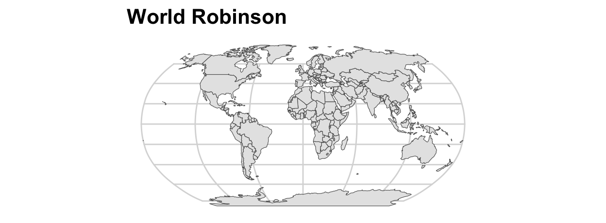
ggplot() +
ggspatial::layer_spatial(data = dunia)+
coord_sf(crs = "ESRI:54032") +
ggtitle("World Azimuthal Equidistant")+
cowplot::theme_minimal_grid()ggplot() +
ggspatial::layer_spatial(data = dunia)+
coord_sf(crs = "ESRI:54002") +
ggtitle("World Equidistant Cylindrical")+
cowplot::theme_minimal_grid()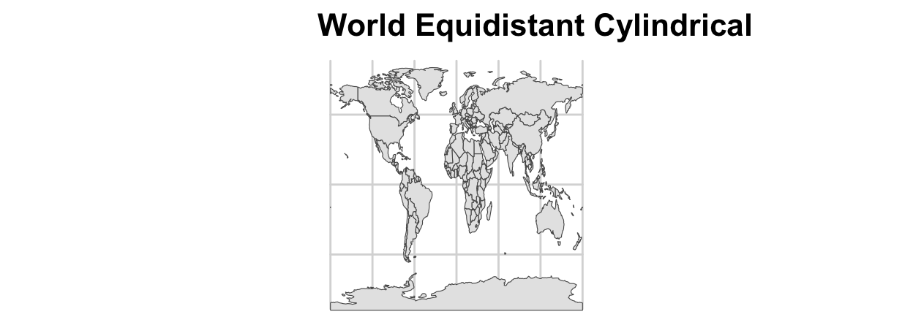
ggplot() +
ggspatial::layer_spatial(data = dunia)+
coord_sf(crs = "ESRI:54010") +
ggtitle("World Eckert VI")+
cowplot::theme_minimal_grid()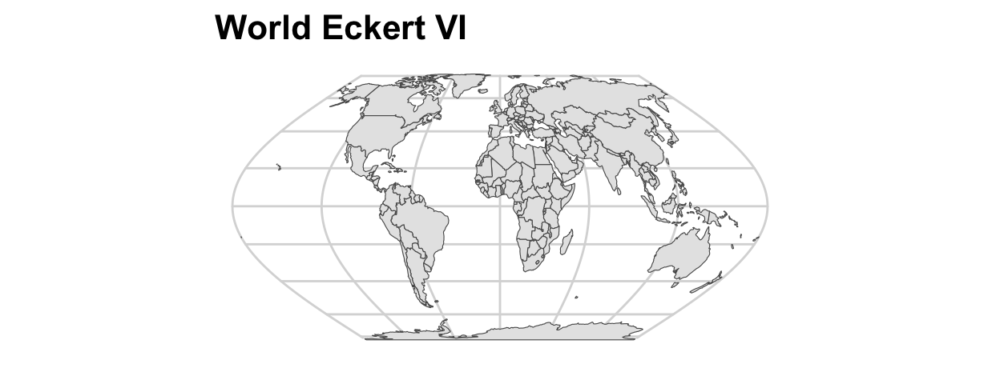
ggplot() +
ggspatial::layer_spatial(data = dunia)+
coord_sf(crs = "ESRI:54031") +
ggtitle("World Two Point Equidistant")+
cowplot::theme_minimal_grid()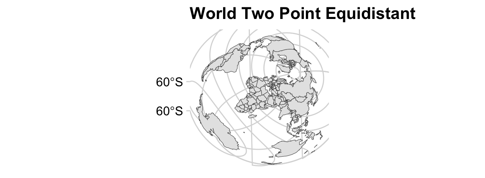
5 Representating Features
Spatial entries in GIS can be represented as a vector or as a raster
.You see below how river can be represented as a vector (left) and as a raster (right)
There three different types of vectors: points, polylines, and polygons
5.1 Points
Points are just dots that have a coordinate pair:
(i.e. latitude - X and longitudes - Y)
5.2 Polylines
Polylines are a sequence of two or more coordinate pairs - vertices.
Roads and rivers are typically stored as polylines in GIS
5.3 Polygons
Polygons are three or more line segments whose starting and ending coordinate pairs are the same.
Countries are usually depicted as polygons
6 Shapefile fomats
A shapefile is a file that can depict one of the following features: points, polylines, polygons
A shapefile typically contains the following file extensions (all of them are necessary for the shape file to work)
| File extension | Content |
|---|---|
| .dbf | Attribute information |
| .prj | Coordinate system information |
| .shp | Feature geometry |
| .shx | Feature geometry index |
Shapefiles can also be stored in a Geodatabase - the native data structure for ArcGIS. A geodatabase is a collection of spatial and non-spatial data stored in a relational database management system. A shapefile is a simple file-based format that stores geometry and attributes of a single feature class.
A shapefile can also be stored within GeoPackages - an open, non-proprietary, platform-independent data format. You will most frequently encounter shapefiles and geodatabases
6.1 Rasters
Rasters use an array of cells or pixels to represent:
suface temperatures
elevation
CO2 emissions
6.2 Raster file formats
Rasters are essentially pictures. They are in part defined by their pixel depth: range of distinct values that the raster can store